variants <- read.table("DataVizDay1_files/variants_from_assembly.bed", sep="\t", quote='', stringsAsFactors=TRUE,header=FALSE)
names(variants) <- c("chrom","start","stop","name","size","strand","type","ref.dist","query.dist")Getting Started with Data Visualization
Data Visualization Day 1
Introduction
Welcome to the first day of data visualization! Hopefully today will feel fun and rewarding as you will learn how to create beautiful plots to explore data, communicate insights, and maybe even include in a publication! We will show you how to use the two most popular methods to create plots: base R and ggplot. Let‚Äôs dive in! üìä
Objectives of Data Visualization: Class 1
Build a basic plot using base R functions
Build a basic plot using the
ggplotpackageChange design elements of plots using base R and
ggplot
Dataset overview
For this lesson, we will be using a .bed file of genetic variants from https://marianattestad.com/blog. We will need to read in this data using the read.table() function, then rename the columns with the name() function:
Let’s take a look at this dataset and what kind of research questions we could explore using this data.
head(variants) chrom start stop name size strand type ref.dist query.dist
1 6 103832058 103832059 SV1 185 + Insertion 0 185
2 6 102958468 102958469 SV2 317 + Insertion -14 303
3 6 102741692 102741693 SV3 130 + Deletion 130 0
4 6 102283759 102283760 SV4 1271 + Insertion -12 1259
5 6 101194032 101194033 SV5 2864 + Insertion -13 2851
6 6 101056644 101056645 SV6 265 + Insertion 0 265There are 9 different columns in this dataset, the genomic position (chrom, start, stop), name, size, strand, distance to reference (ref.dist) and distance to query (query.dist). What are some questions we could ask about this data?
Some examples:
What is the distribution of distances to the reference?
Are the sizes of variants of different types different?
We can quickly explore questions like these by creating quick visualizations of the data.
Let’s Get Plotting!
Choosing a plot type
Data visualizations can tell us about the relationships of different variables in a data set. There are 3 main categories of these relationships, each answering a different type of question about the data.
- The variation within a single variable
- How do expression levels of a gene vary among patient samples?
- The co-variation between a continuous and categorical variable
- How does beak size compare between penguins living on different islands?
- The co-variation between two continuous variables
- How does trunk thickness relate to the age of a tree?
Differentiating between continuous variables and categorical variables that are represented by a number
- If you can replace the number with a descriptor and it still makes sense, it is a categorical variable
- you can tell R that this is a categorical variable by using
factor()orcharacter()
- you can tell R that this is a categorical variable by using
i.e. chromosome 1 and chromosome 2 could be re-labeled as chromosome A and chromosome B or “first chromosome” and “second chromosome” without fundamentally changing the information
- If you can add/subtract two values and it still makes sense, it is a continuous variable
i.e. subtracting chromosome 6 - 2 = 4, this 4 doesn’t mean anything, but subtracting size 317 - 185 = 132, this means one variant is 132 bp larger than the other
There are 2 main ways we create plots in R
Using base R functions (i.e.
plot())Using tidyverse functions (i.e.
ggplot())- This requires loading the
ggplot2package withlibrary(ggplot2)
- This requires loading the
Numeric vs Numeric
Let’s try this with a plot type you are likely very familiar with: a scatterplot
A scatterplot looks at co-variation between 2 numeric variables, so what are 2 numeric variables we have in this dataset?
Let’s try plotting ref.dist vs query.dist:
Base R
For base R, the plot() function takes in vectors of x and y values to plot.
Q: How do we extract the entire column of ref.dist and query.dist from our dataset, variants?
A: variants$ref.dist and variants$query.dist
## create a scatterplot
plot(x = variants$ref.dist, y = variants$query.dist)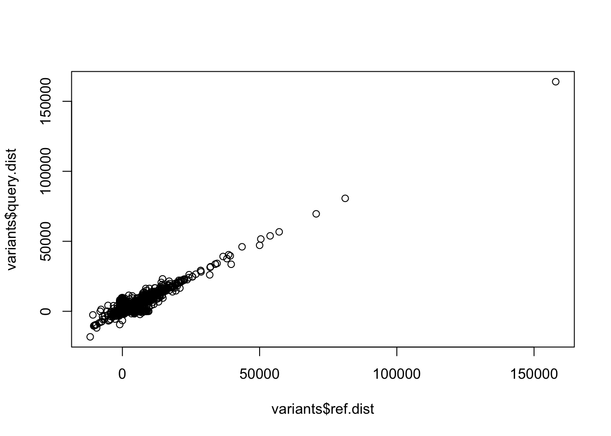
That’s great! But it’s not easy to understand what these x and y axes are, so let’s relabel them by changing the parameters xlab and ylab inside the plot() function call
## create a scatterplot with better axes labels
plot(x = variants$ref.dist, y = variants$query.dist,
xlab = "Reference distance", ylab = "Query Distance")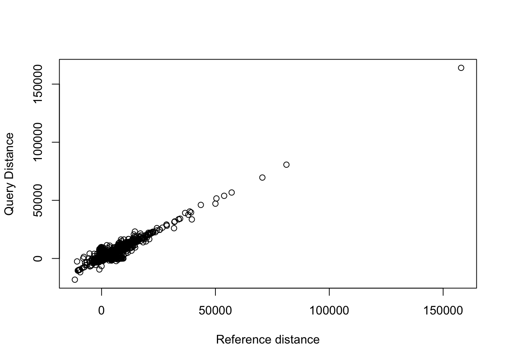
Great! We can also add a title and subtitle with main and sub, try this on your own!
Other plot types:
| Function | Plot Type |
|---|---|
plot() |
scatterplot |
lines() or plot(type = "l") |
line plot |
To plot a line on top of points, you can run lines() with the same data immediately following plot(). Notice that the line connects all points, leading to a bit of a jumbled mess. How do you think we can fix this?
## line plot
plot(x = variants$ref.dist, y = variants$query.dist,
xlab = "Reference distance", ylab = "Query Distance")
lines(x = variants$ref.dist, y = variants$query.dist)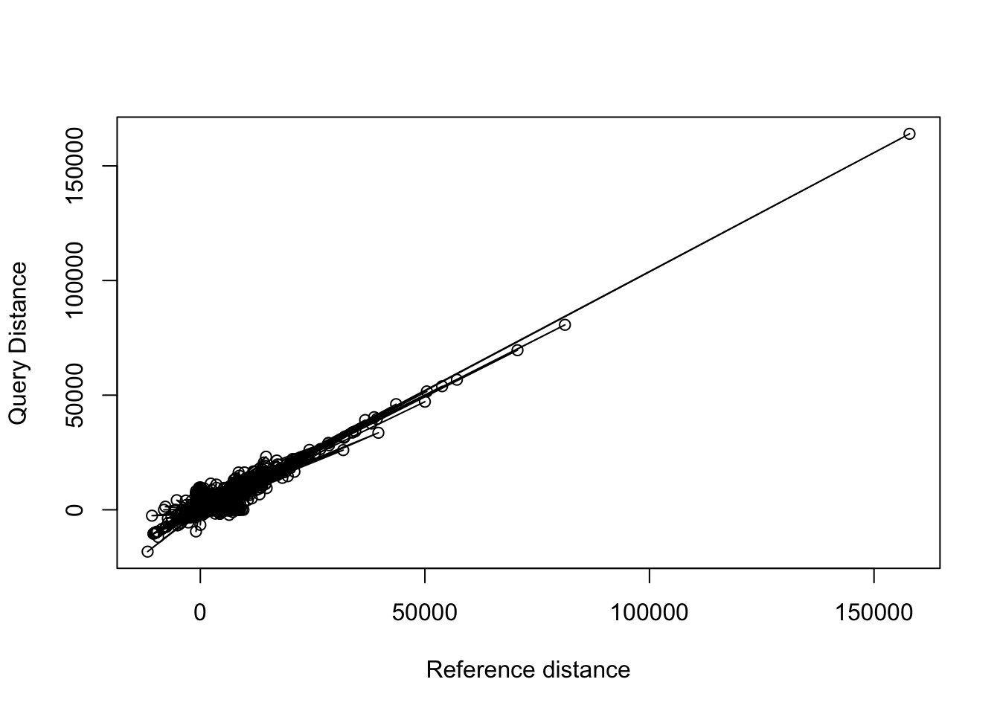
ggplot
For more complex layered plots, we can also use ggplot() from the ggplot2 package. “gg” stands for “grammar of graphics” and plots are built a bit like sentences with different parts building on each other.
To start, let’s load in the ggplot2 package. You will only need to do this once.
## load the ggplot2 library
library(ggplot2)Now each time we want to make a plot, you will start by using ggplot().
ggplot()
We haven’t given this function any data, so right now we just have an empty grey box.
The first layer we can add is the data. ggplot() requires the name of the dataset once, then you can just use column names throughout the rest of the code instead of using dataset$var1, dataset$var2, dataset$var3 , etc.
ggplot(variants)
We still have a grey box! Although we have told the function we want to use data from the variants dataset, we didn’t tell it which data we want to use. Any time you are referencing a column name to set the position, color, size, etc. of a point, you need to wrap it inside aes(), which is short for “aesthetics”. This looks something like this:
ggplot(variants, aes(x = ref.dist, y = query.dist))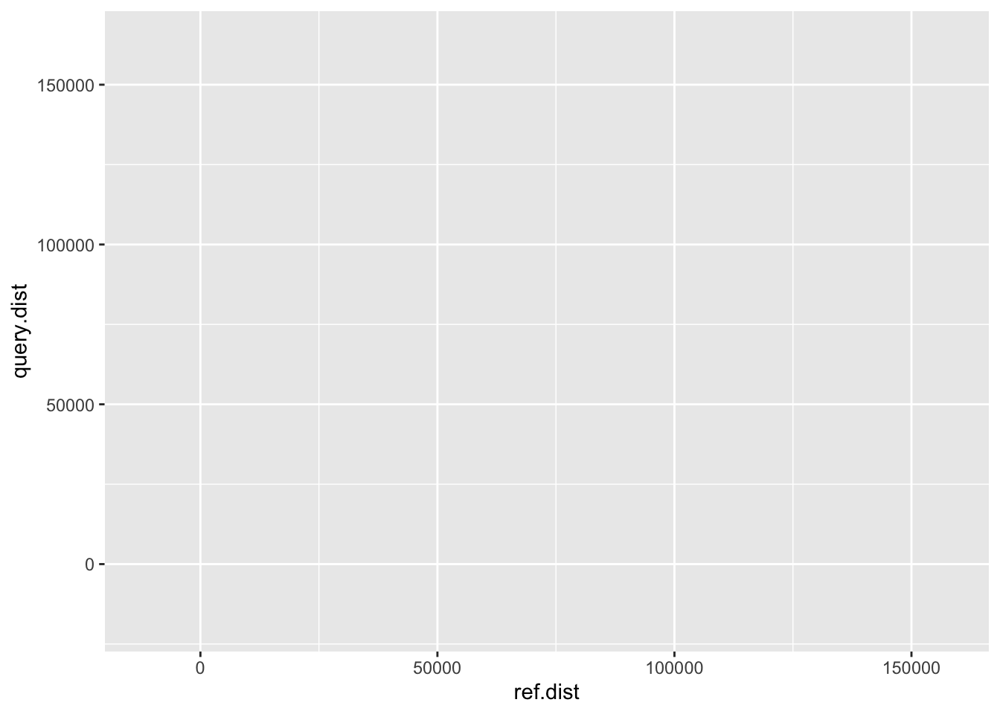
More than a grey box! Now that we know which variables we are plotting and the dataset they come from, we have the framework to add the next layer: geometry. The geometry, as you might guess, refers to what type of shapes to put on the plot. Is it a line? A point? A bar? For scatterplots, we want the data represented as points, so we will use geom_point().
Whenever we add a ggplot layer, we will connect it to the current plot using a + sign:
ggplot(variants, aes(x = ref.dist, y = query.dist)) +
geom_point() # plot as points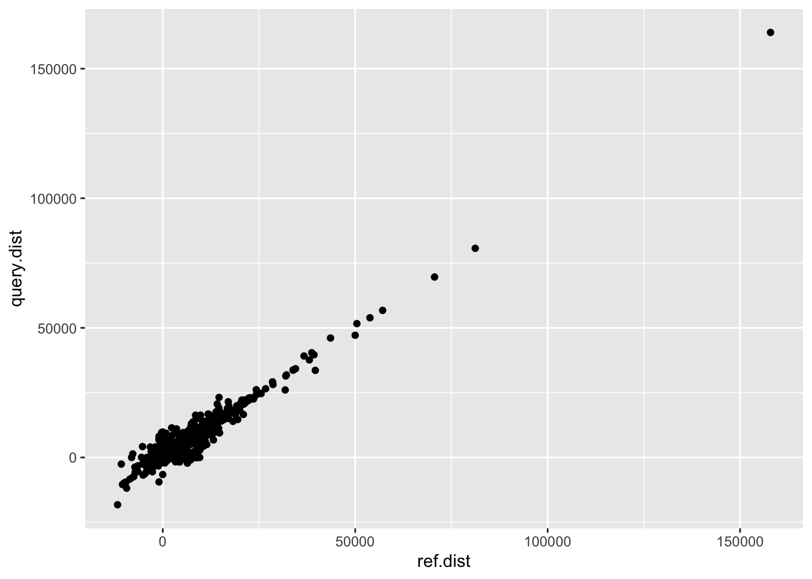
Voila! We have our scatterplot! Now we can continue adding layers to change things like the labels. Use the labs() function to change the x, y, and optionally the title and subtitle:
ggplot(variants, aes(x = ref.dist, y = query.dist)) +
geom_point() + # plot as points
labs(x = "Reference Distance",
y = "Query Distance",
title = "Plot Title",
subtitle = "Plot Subtitle")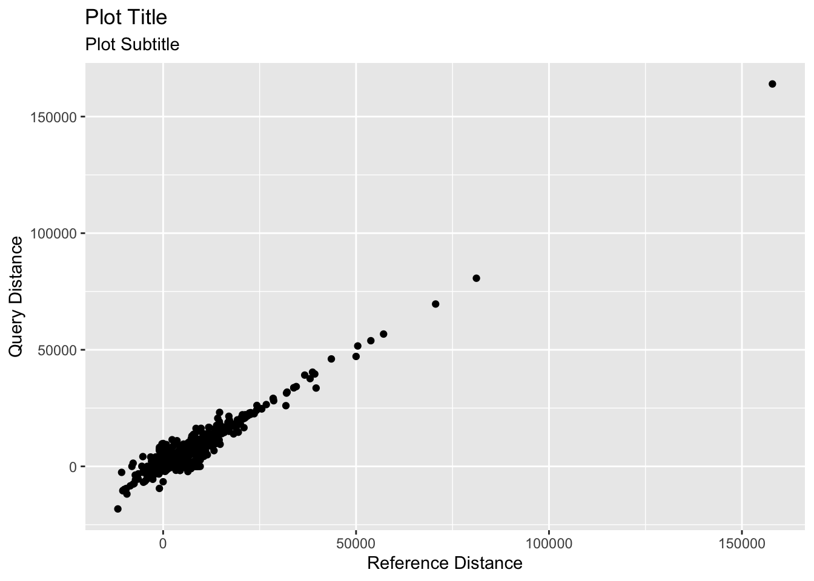
ggplots will all follow this general formula, changing the geom for different plot types.
Other plot types:
| Function | Plot Type |
|---|---|
geom_point() |
scatterplot |
geom_line() |
line plot |
geom_smooth() |
line plot of smoothed averages |
To plot a line on top of points, you can add a second geom, using geom_point() + geom_line().
ggplot(variants, aes(x = ref.dist, y = query.dist)) +
geom_point() + # plot as points
geom_line() + # plot as line
labs(x = "Reference Distance",
y = "Query Distance",
title = "Plot Title",
subtitle = "Plot Subtitle")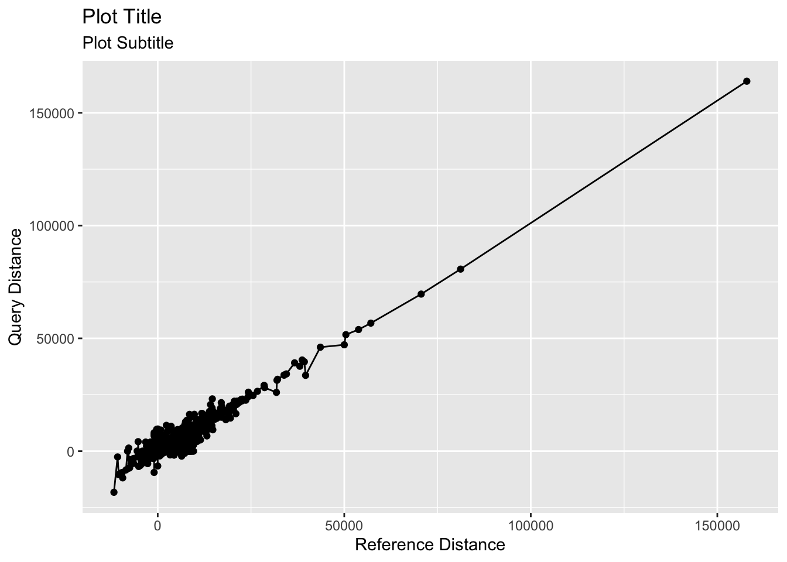
ggplot(variants, aes(x = ref.dist, y = query.dist)) +
geom_smooth() + # plot as smooth line
labs(x = "Reference Distance",
y = "Query Distance",
title = "Plot Title",
subtitle = "Plot Subtitle")`geom_smooth()` using method = 'gam' and formula = 'y ~ s(x, bs = "cs")'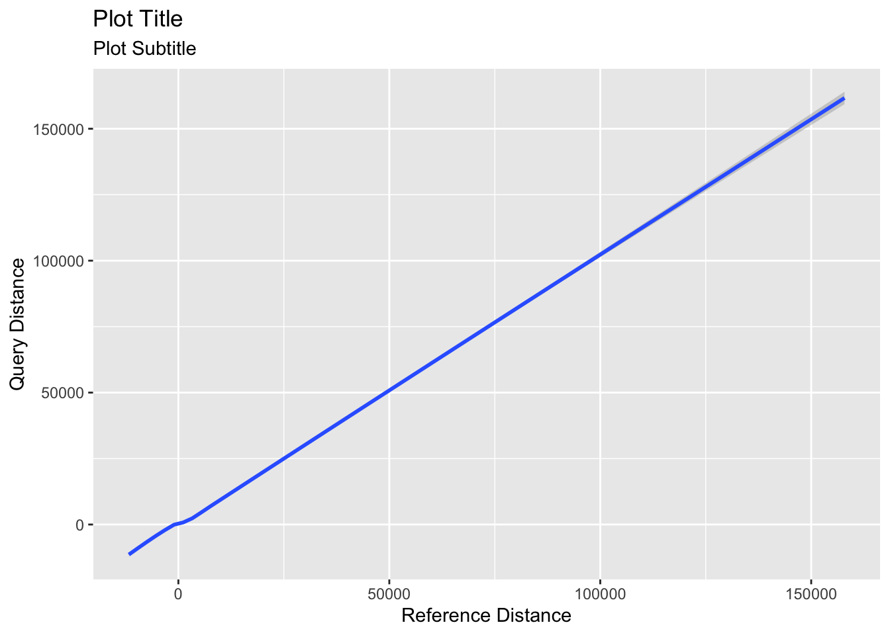
Numeric Distribution
Sometimes we want to look at the distribution or spread of values for one continuous variable. For example, in our data, what is the distribution of sizes for our variants?
There are several plot types we can use to explore this question
| Plot Type | Base R Function | ggplot Function |
|---|---|---|
| histogram | hist() |
geom_histogram() |
| density plot | plot(density()) |
geom_density() |
| boxplot | boxplot() |
geom_boxplot() |
| violin plot | not available | geom_violin() |
| bar plot | barplot(table()) |
geom_bar(stat = "identity") |
Tip
Try ?function_name() to learn more about the different parameters used to customize each function
Base R
In base R, we can pass each plotting function the vector of values that we want to plot. In this case, we want to plot all of the values in the size column of variants, so we will pass in variants$size to our plotting functions.
## histogram
hist(variants$size)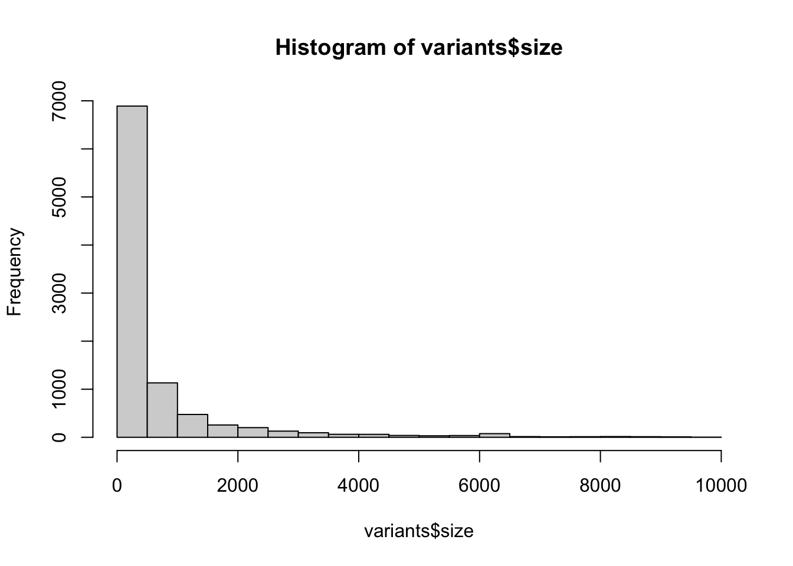
## density plot
plot(density(variants$size))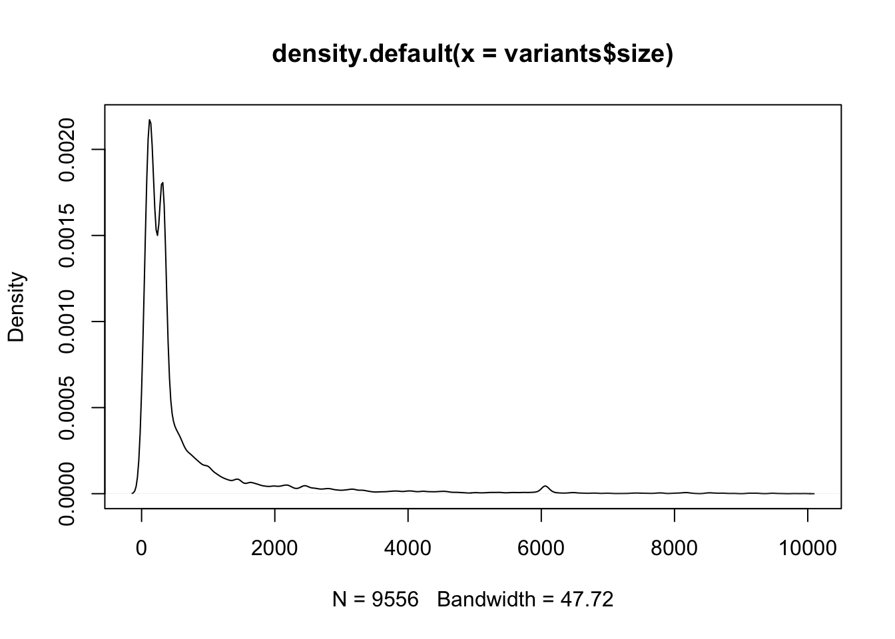
## boxplot
boxplot(variants$size)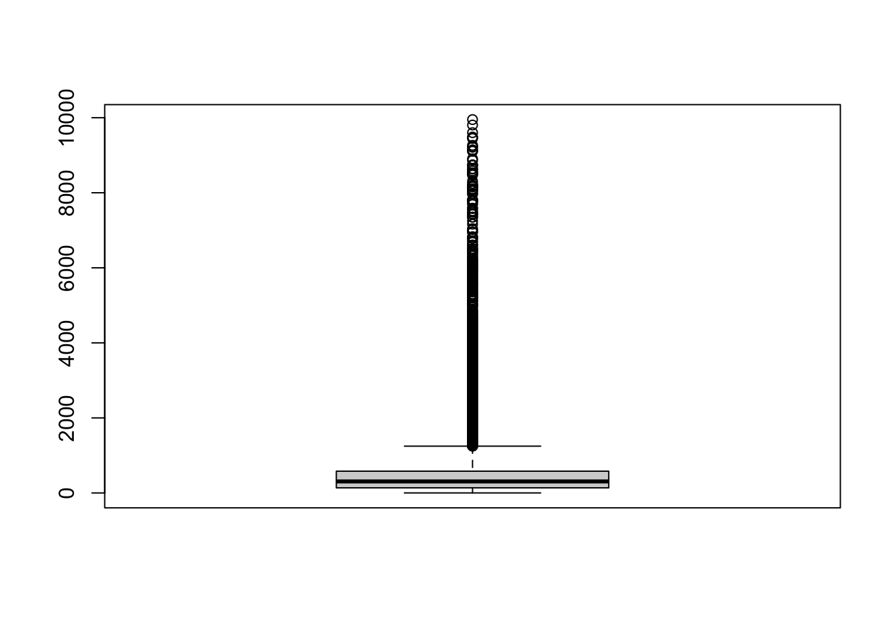
Try adding labels and titles as described before.
ggplot
In ggplot, we start by calling the base ggplot() function with the entire dataset, variants, then we can set the aesthetics of the x value to our column of interest with aes(x = size). Then, we can add unique geoms for each plot type.
## histogram
ggplot(variants, aes(x = size)) +
geom_histogram()`stat_bin()` using `bins = 30`. Pick better value with `binwidth`.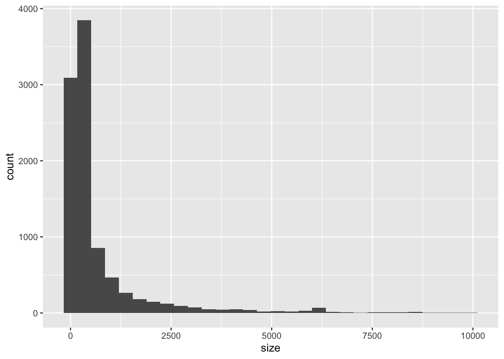
## density
ggplot(variants, aes(x = size)) +
geom_density()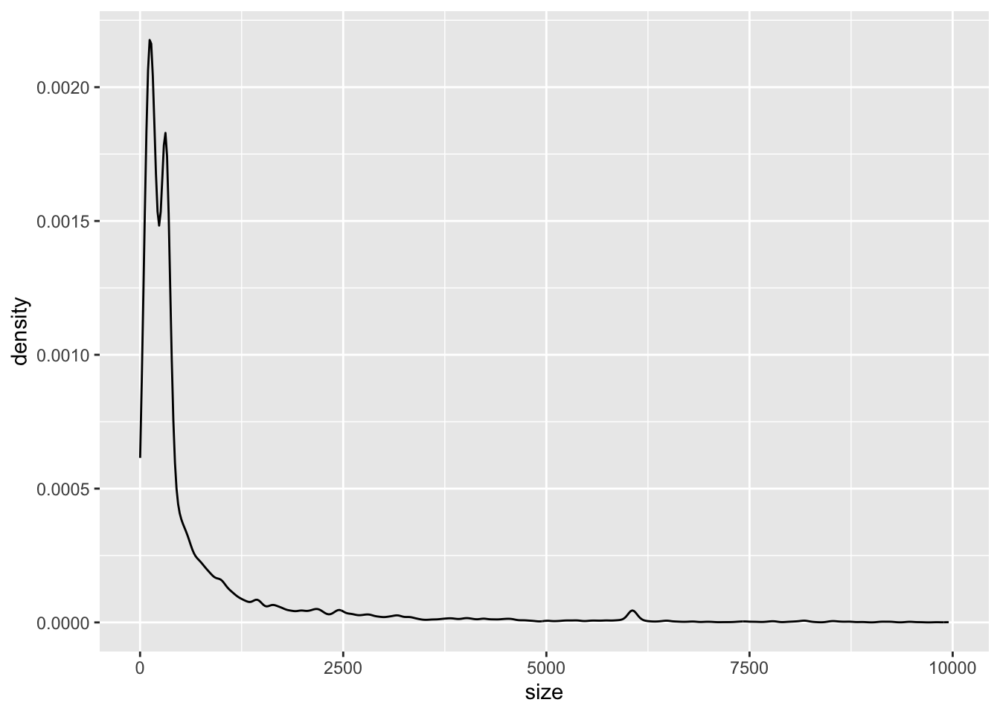
## boxplot
ggplot(variants, aes(x = size)) +
geom_boxplot()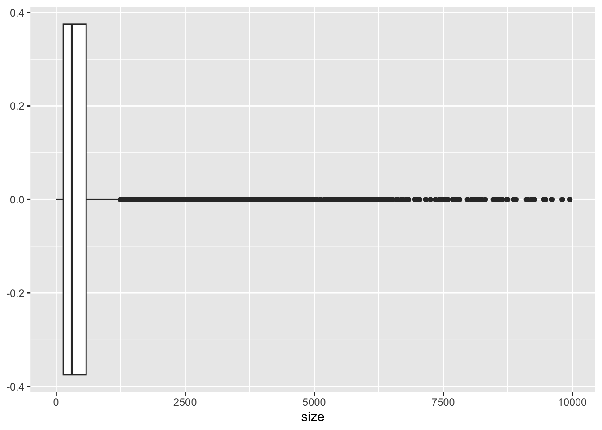
## violin plot
ggplot(variants, aes(x = size)) +
geom_violin(aes(y = 1)) 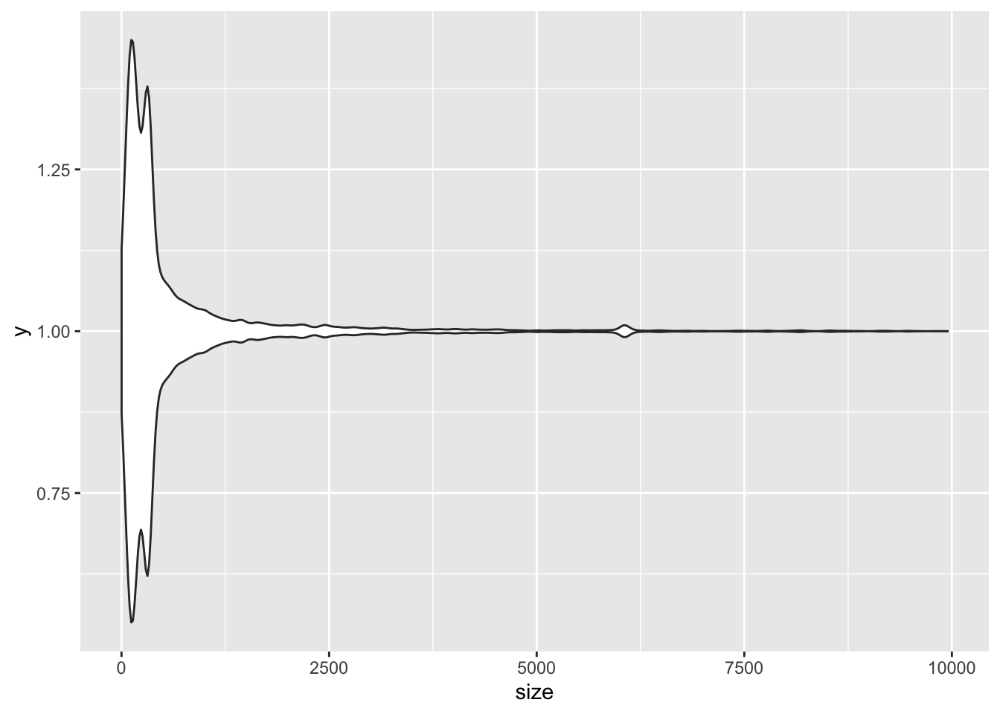
# violin plots are meant to compare categories, but we can tell it we only want one plot by setting the aesthetic of `y` to the value 1Try adding labels and titles described before. You can also easily change the look of ggplots with different themes, try adding theme_ and look at the different autofill options. See more about built-in themes here and more ways to customize themes here.
ggplot(variants, aes(x = size)) +
geom_density() +
theme_classic()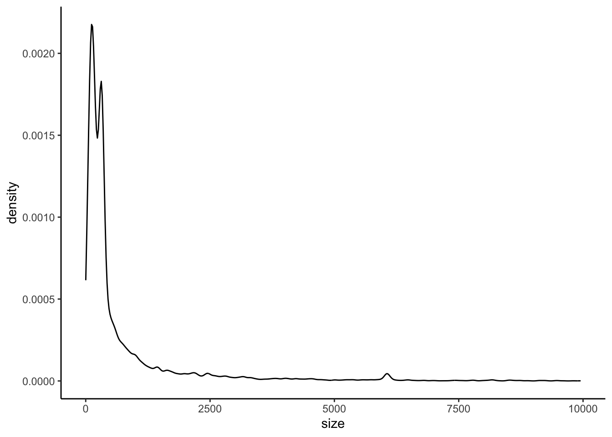
Continuous vs Categorical
Sometimes we want to see how the counts or the distribution of a continuous variable change between different categorical groups. Often, we use a barplot for this, but there are several other plot types we can use
| Plot Type | Base R Function | ggplot Function |
|---|---|---|
| bar plot | barplot(name = cat_var, value = cont_var) |
geom_bar() |
| boxplots | boxplot(cont_var ~ cat_var) |
geom_boxplot() |
| violin plots | not available | geom_violin() |
where cont_var is the continuous variable and cat_var is the categorical variable.
Base R
In base R, if we want to plot a numeric by a categorical variable, we will use the ~ symbol to represent “by”
For example, if we wanted to plot size by strand, we would do
boxplot(variants$size ~ variants$type)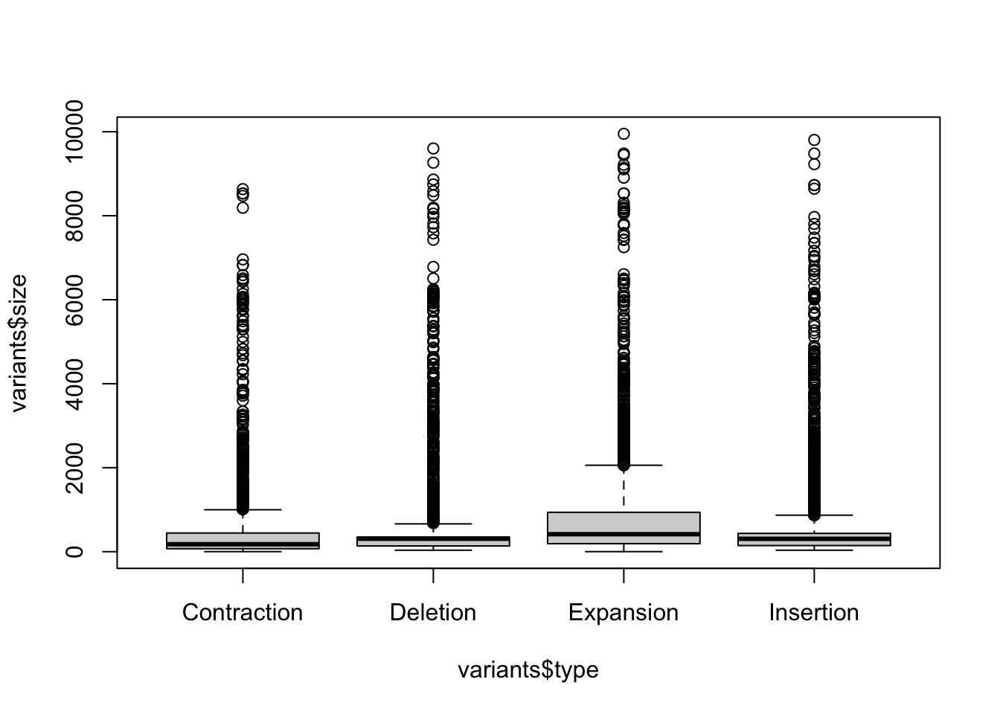
To make a barplot, we have to first count how many instances there are of each category using the table() function. First, we start with subsetting our data to only the columns we are interested in, then we pass this smaller dataset into the table() function.
# subset all rows, only column "type"
smallData <- variants[,"type"]
variantsCount <- table(smallData)Then, we use the barplot() function, setting the height of bars to the counts in the new table, and the name of the bars to the names of the table. The height of the bars is the total summed size for each variant type.
barplot(height = variantsCount, names = names(variantsCount))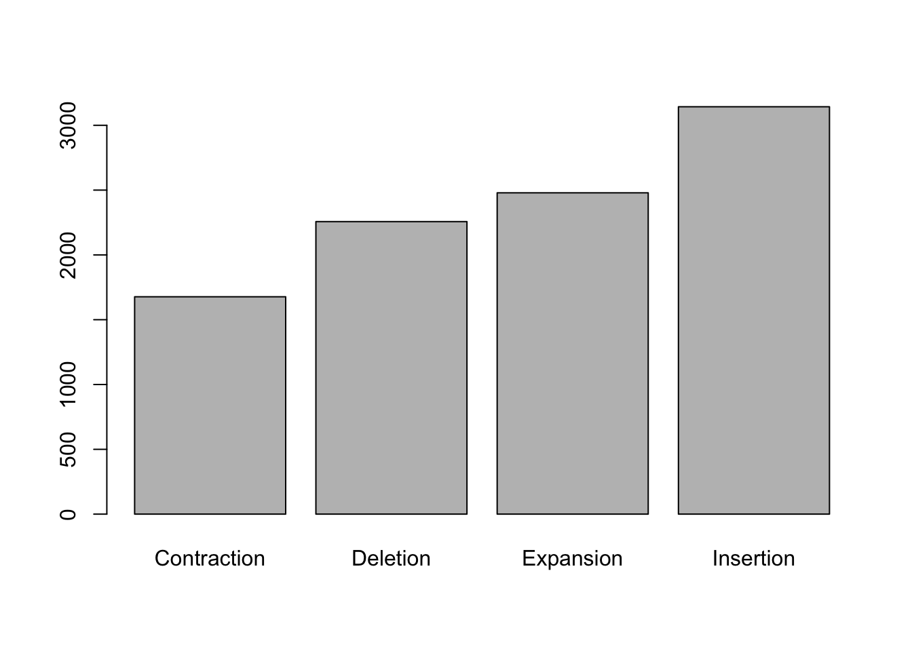
ggplot
When using ggplot, the total counts per category will be calculated for us. So, we can create a base plot, setting x to the categorical variable and y to the continuous variable, then add +geom_boxplot() to make a boxplot.
## density
ggplot(variants, aes(x = type, y = size)) +
geom_boxplot()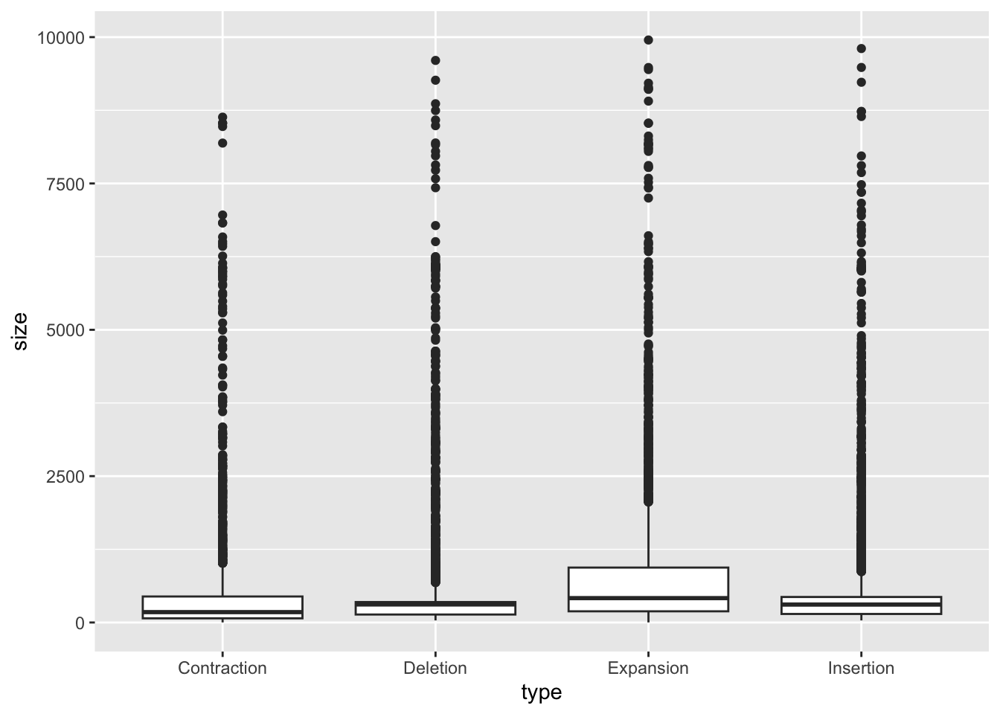
To make a barplot, we need to give it a bit more information. The height of the barplot is based on certain statistics, such as sum or mean. Since these are summary statistics, we will add stat = "summary" and fun = "mean" if we want the bar height to relate to the means of each category. How does this compare to the sums?
## boxplot
ggplot(variants, aes(x = type, y = size)) +
geom_bar(stat = "summary", fun = "mean")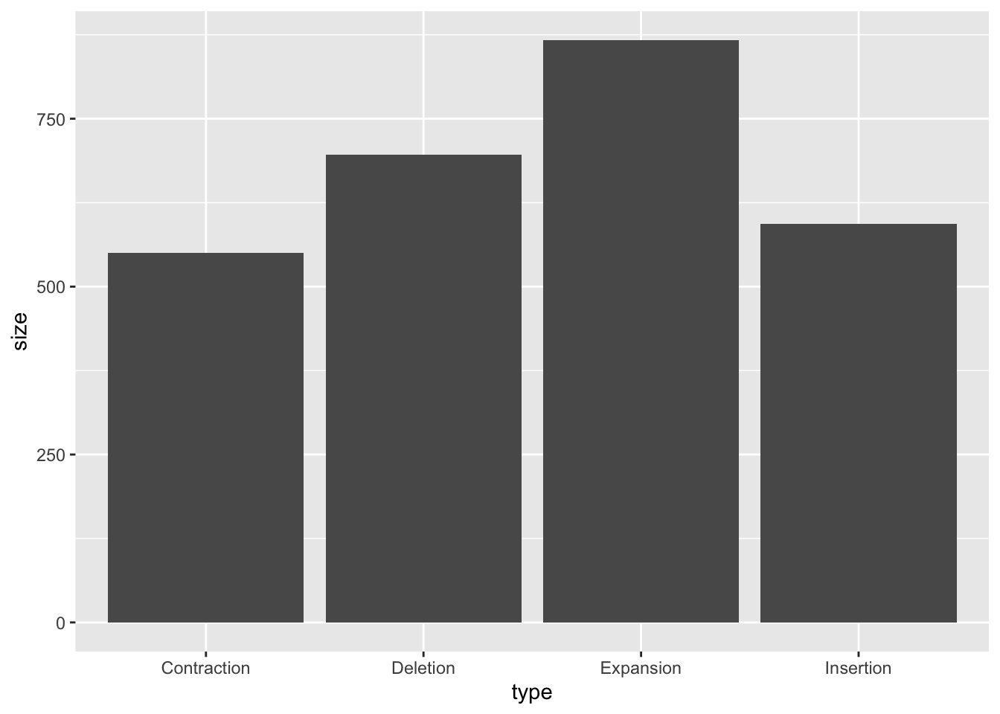
Additional Resources
Try changing the colors using one of these tutorials:
https://www.datanovia.com/en/blog/ggplot-colors-best-tricks-you-will-love